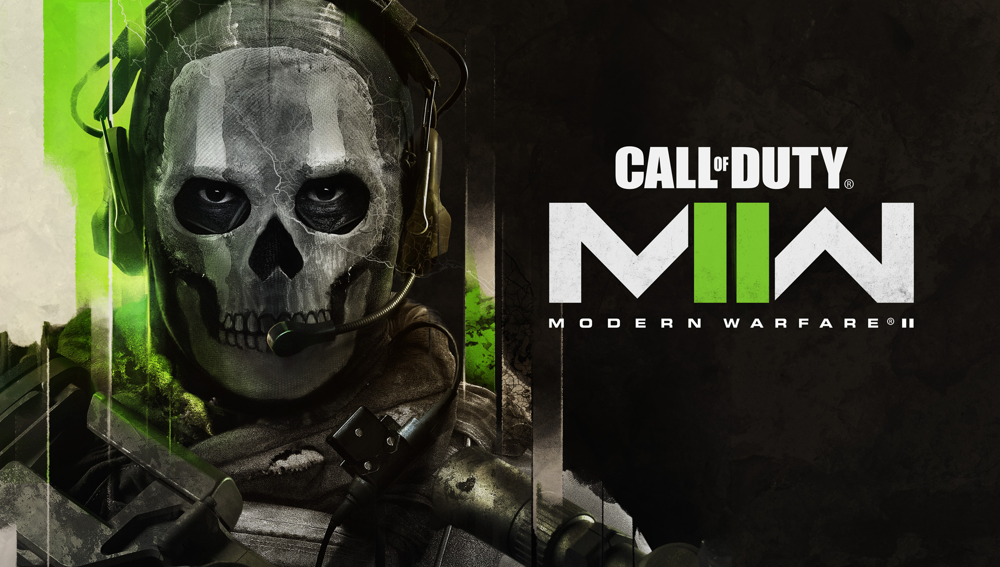

First Impressions of Disney's Andor
By Nicholas Batschynsky
Published: 10/16/2022
As someone who is a very big fan of the Star Wars franchise, I was very excited
about the announcement of Andor, a story that would be following a popular rebel
hero from Rogue One: A Star Wars Story. The show premiered on Wednesday, September
28th with three episodes, which was a nice chunk of content for us fans to sink our
teeth into. These first few episodes were solid and provided a good foundation for
the rest of the show. Immediately you could tell that they wanted to emphasize the
darker tone that the show would take compared to most other Star Wars content. Sure
The Mandalorian is about an intergalactic bounty hunter, but he also has a wholesome
child to take care of and attempts to act with some degree of morality. Andor
imediately dispels the idea of this show being another tame Star Wars series when
Cassian murders two imperials and becomes a runaway fugitive.
After watching the first three episodes, I was convinced the show would be worth
watching, but it didn't seem like a show that would captivate me the way The
Mandalorian did. I was pleasantly surprised to find out that I was wrong; every new
episode that's been released since has been fantastic, and with a runtime of 45
minutes or more. The theme of this show being a bit darker than typical Star Wars
media, along with the fact that we get more content in each episode has left me
very satisfied thus far, and I'm definitely looking forward to watching a new
episode every Wednesday.
Is the New Modern Warfare 2 a Worthy Successor to the 2009 Classic?
By Nicholas Batschynsky
Published: 10/16/2022
With the new Call of Duty: Modern Warfare 2 almost here, lets talk a
little bit about my first impressions with the gameplay that has been
released, as well as my own experiences with the beta for this
brand new title taking on the name of what many consider the best Call of Duty
in the entire franchise. To start off, Modern Warfare 2 was undoubtedly my
favorite installment of the COD franchise; throwing a new coat of paint on
the old maps and weapons while updating some of the gunplay mechanics would
have been a perfectly viable option for this new title, but they went ahead
and made a very new feeling game. The gunplay is definitely more
unforgiving than in previous Call of Duty games, but the progression system
for weapons quickly alleviates this problem and adds some new elements to the
create-a-class system that weren't present before.
For starters, weapons are now based around a main receiver type which affects
weapon class (e.g., assault rifle, marksman rifle, submachine gun, etc.).
You level up weapons by getting kills with them and completing challenges,
which is similar to other COD games, but now there is also a progression tree
for each gun. For example, after hitting level 12 with the starting M4, you'll
unlock the FTAC Recon, which is a receiver for a semi-auto battle rifle. At
level 16 you'll gain access to a new receiver, the FSS Hurricane. Each of these
receivers has different attachments to unlock, but when requirements are met,
they are also retroactively unlocked for the previous receivers in the progression
tree.
So far we haven't seen any of the
original maps outside of the new Warzone 2 gamemode, but there is
still a high likelihood that we could get remasters of maps like Terminal,
High Rise, Rust, and Favela which fans would love to see. Overall, I think
Modern Warfare 2 2022 is shaping up to be worthy of representing the MW2 name.
Task Force 141 Emblem
| Original Maps |
Confirmed Maps |
New or Remaster |
| Afghan |
Valderas Museum |
New |
| Derail |
Farm 18 |
New |
| Estate |
Grand Prix |
New |
| Favela |
Favela |
Remaster |
| Highrise |
Highrise |
Remaster |
| Invasion |
Mercado Las Almas |
New |
| Karachi |
Breenbergh Hotel |
New |
| Quarry |
Quarry |
Remaster |
| Rundown |
Sariff Bay |
New |
| Rust |
Sa'id |
New |
| Scrapyard |
Al Mazrah City |
New |
| Skidrow |
Ahkdar Village |
New |
| Sub Base |
Hydroelectric |
New |
| Terminal |
Airport |
Remaster |
| Dome |
Observatory |
Remaster |
